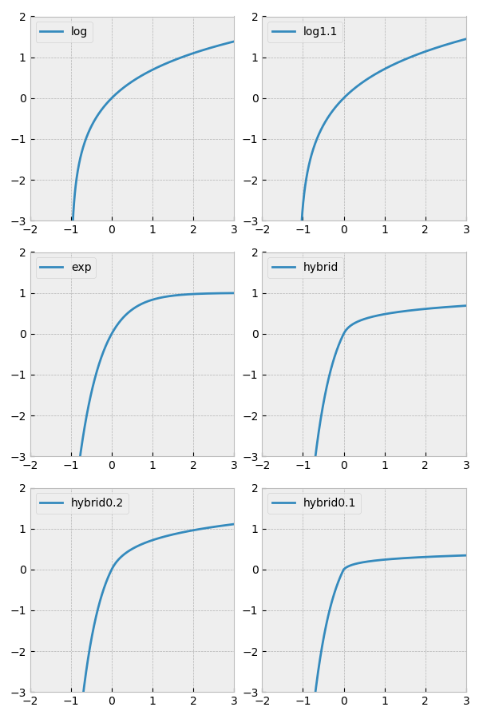

ミクロ経済学の我流シミュレーション その３ log 戦略
■概要 micro_economy_1.py などはよく「発散」してしまうが、「発散」を防止するには、急な価格上昇に対して「弾力的に」需要が減ればよい。そのための方法として、スコアの計算に log 関数に似た関数をかませることにした。 分野の一方がプラスで一方がマイナスといった極端な例はほぼなくなったが、しかし、思ったほど(micro_economy_3.py ほど)バランスは取れなかった。 ■はじめに これまでのシミュレーションで、価格が 1 や 1000 などの極端に振れる「発散」が何度か現れた。micro_economy_1.py が特に顕著である。 労働市場の特徴より、すべての分野の利益をいきなり上げることはできない。労働コストが高くなり過ぎるからである。どれかを犠牲にするなり、どれかが伸びすぎないようにすることが必要である。労働コストも上がっても、すべての価格が上がり、インフレ的にバランスが取れることがありえるかというと、このモデルでは、労働人口が足りなくなり難しいはずである。 つまり「発散」を抑えるには、ある分野を犠牲にしてマイナスになるまで下げて、別の分野をプラスにしてもスコアがよくならないようにすればいい。また、マイナスにせずとも、すでに高い分野の利益を上げるよりもまだ上がり切ってない分野を上げたほうがスコアが増えるようにすれば、分散を最適化に組み込んでバランスを「無理矢理」取らずとも、自動的にバランスが取れるのではないか？ このような特徴を持った関数として log 関数が挙げられる。マイナスの利益については、倍率が高く、プラスの利益については倍率が低くなる。さらに、一分野だけプラスの利益を増やすよりも、他の利益を増やすほうが増分が大きくなる。これによりある種の「弾力」が表せる。「弾力」とは上方向に伸びようとすると上から抑えられるイメージをそう呼んでいる。 もう少し具体的には、log 関数は、利益率に関してかけるようになる。利益率は 売上 - コスト / コスト で、売上が 0 のとき最小だから最小値は -1.0 になる。log(1+r) とすればよさそうだが、r = -1.0 のときはマイナス無限大となり、最適化がうまく動かない。そこで、log そのものではなく、その形に似た別の関数を考える必要がある。 そこでいろいろ考えた関数が、下の図になる。それを一つ一つ説明していこう。
まず、log(1+x) であるが、図では log と書いているものである。これは、x = -1.0 のとき無限大になるので使えないということだった。 次に順番は前後するが、図で exp と書いたもの。y = - b * exp(-a * x) + b を考える。-1 のときの切片を - c とすると、a = log(1+(c/b)) が求まる。x → - 無限大のとき、上は b で抑えられる。b = 1、c = 5 が図に示したものとなる。しかし、この関数の場合、プラス側がほぼ b に張り付いてしまい、勾配が計算されず学習がうまくいかなくなるかもしれない。log 的な特徴も欲しい…。 ならばと、log を少し動かしたのが log1.1 になる。y = b + a * log(x + 1 + c) として、原点を通るから、b = - a * log(1+c)。dy/dx = a/(x+1+c) で、x = 0 のとき dy/dx = 1 とすると a = 1.1 となる。これは原点付近がなだらか過ぎるかもしれない…。 exp と log のハイブリッドにしよう。それが hybrid になる。マイナス側は exp でプラス側は log にする。プラス側は、 y = 0.2 * log(x + 0.1) - 0.2 * log(0.1) が良さそう。これは x = 0 で dy/dx = 2 になる。 マイナス側は y = - b * exp(- a * x) + b で、x = 0 で dy/dy = 2 となり、 x = -1 の切片が - c であるとすると、c = 2 * (exp(a) - 1) / a になり、簡単に a を求められない。が a = 2, b = 1 とすると、c = 6.3890... と求まる。これを使うことにした。(Google 検索のグラフ機能で c = 6 〜 10 で、a が適当な値になるものを目で見て求めた。) プラス側は、傾きが急なのがいいのか緩いのがいいのかはよくわからない。そこで、傾きが急になる hybrid0.2 として、プラス側が y = 0.4 * log(x + 0.2) - 0.4 * log(0.2) なものを作る。これは x = 0 のとき dy/dx = 2 で連続する。 一方、傾きが緩い hybrid0.1 として、プラス側が y = 0.1 * log(x + 0.1) - 0.1 * log(0.1) となるものも試す。なお、これは、x = 0 のとき dy/dx = 1 で、連続ではない。連続ではないものの例ともなる。 ■実験 上のグラフの形の他にいくつかプログラムの動作を決めるオプションがある。まず、今回の Python のスクリプトの名は micro_economy_5.py。そして、上のグラフの何を使うかはオプション --score-transform で指定し、log, log1.1, exp, hybrid, hybrid0.2, hybrid0.1 が指定できる。デフォルトは、--score-transform=hybrid である。 また、労働需給の効果をどれぐらいにするかを指定するオプション --score-labor-magもある。これは大きいとその効果を厳しく見ることになり、小さくすると最適化に余裕ができることになる。デフォルトは --score-labor-mag=0.01 である。 さらに、スコアの平均を分野ごとに取るのであるが、分野ごとの利益率をどう扱うかのオプション --score-mean がある。方法としては、分野ごとの最大値を取る max, 平均を取る mean, 分野の垣根を取りはらい個々の会社全体でスコアの平均を取る each が指定できる。デフォルトは --score-mean=max で、一番、最適化に余裕ができる設定のはずである。 試すと、--score-transform では log にするとプログラムが動かないのは予想通り。その他では hybrid が最もバランスが取れて良さそうだが、他もそこまでダメじゃない。exp が案外、利益率にマイナスを許すことが多いのはなぜだろう？ 次に --score-labor-mag は、0.00001 ぐらいにして、ようやく普段 10 人以上の余裕が出てくる感じだが、最適化がうまくいかないときは、0.1 でも 10人以上の差が必要になるようだ。経験的には 0.01 ぐらいで良さそうに思う。 そして、--score-mean については each だと厳し過ぎる。mean については max より余祐はないはずだが、each ほどの厳しさはなく max からあまり変化はないようだ。 …と実験の概要を述べたところで、実際の実験結果の一部もコピペしておこう。下はデフォルトのパラメータで行った結果である。 $ python micro_economy_5.py --score-transform=hybrid --score-labor-mag=0.01 --score-mean=max Acronyms: W: Wages, N: Necessaries, L: Luxuries, I: Ingredients. OptForStep: iterated 254 times score=-0.2557086491722858 Companies N:2, L:2, I:2 [Type] [OwnerId] [ProfitRate] N 1 0.3357480139283765 N 4 0.22621168164938685 L 2 0.21032889725048914 L 3 0.3174388843010281 I 2 0.12453800881110703 I 3 0.15468502083026284 Increase of Social Debt: -28610.180515082953 Increase of Total Savings: -163.00580738030476 Price W:25.131461918946833, N:8.723093011626204, L:18.304072771470736, I:13.058076848709304 Worker's Savings Increase: 6.348646484480813 Supply of Labors = 656 (Demand - Supply) of Labors = 0.02443343472941706 Profit Rate N:0.3357480139283765, L:0.3174388843010281, I:0.15468502083026284 Product N:2163.9949827978794, L:227.0, I:1259.691785324613 Savings mean:9.849737510655533, variance:44.50510597845271 OptForStep: iterated 93 times score=-0.2668802423994038 Companies N:3, L:3, I:3 [Type] [OwnerId] [ProfitRate] N 1 0.38995424378048316 N 4 0.2889233452501982 N 2 0.17280874411961922 L 2 0.21924676873511104 L 3 0.36990031432079956 L 2 0.2953629040004177 I 2 0.0992155670763938 I 3 0.13794275221049332 I 0 0.11507314562616924 Increase of Social Debt: -21298.503946068828 Increase of Total Savings: -157.51250866063856 Price W:25.547537888114316, N:9.19445072945831, L:19.180685449311273, I:12.991765978210744 Worker's Savings Increase: 6.391651820357481 Supply of Labors = 662 (Demand - Supply) of Labors = -0.031463796653383724 Profit Rate N:0.38995424378048316, L:0.36990031432079956, I:0.13794275221049332 Product N:2093.8352996351123, L:230.0, I:1335.0512233768636 Savings mean:9.70214956123946, variance:41.81110723560632 ： ：(途中省略) ： OptForStep: iterated 254 times score=-0.26539494066806646 Companies N:5, L:6, I:6 [Type] [OwnerId] [ProfitRate] N 4 0.30911986527611657 N 2 0.1942226485171729 N 3 0.2164732723367654 N 3 0.23758612578681754 N 0 0.12223165038757512 L 3 0.5452855783440985 L 2 0.46537109935767507 L 1 0.5144675179200853 L 0 0.4882344542486531 L 2 0.39023999444253965 L 1 0.4375321719516719 I 3 0.08008803639671597 I 0 0.06121032484976638 I 1 0.10290476238676771 I 4 0.04515843996954547 I 3 0.05989645377468558 I 1 0.10018012522087838 Increase of Social Debt: -5981.21818225224 Increase of Total Savings: 254.1203429116813 Price W:26.364227979289574, N:9.202525204456183, L:21.77774740414562, I:12.442836260579888 Worker's Savings Increase: 7.2585789850459825 Supply of Labors = 675 (Demand - Supply) of Labors = 0.004624815909323843 Profit Rate N:0.30911986527611657, L:0.5452855783440985, I:0.10290476238676771 Product N:2086.511779388219, L:215.0, I:1546.499816535113 Savings mean:9.649201148569894, variance:48.49235766261805 ： ：(途中省略) ： OptForStep: iterated 137 times score=-0.2529055674110597 Companies N:9, L:10, I:8 [Type] [OwnerId] [ProfitRate] N 0 -1.0 N 3 0.004382705440974293 N 3 0.02336916535510581 N 0 -1.0 N 1 0.019682369596810304 N 1 0.05014497877633316 N 0 0.07633301459027723 N 3 0.09773986474657112 N 0 0.09724330177126622 L 4 0.5933041288573384 L 2 0.42814694534480247 L 0 0.3837064309893382 L 1 0.3970509637268753 L 4 0.2923160365673788 L 1 0.29294960364357814 L 2 0.1694829937693616 L 3 0.20330424269446068 L 0 0.12294752561007138 L 1 0.1417093448052757 I 1 0.16838513614747008 I 4 0.09222387773826855 I 1 0.12523433373396956 I 3 0.14818848610957958 I 0 0.16501268428939042 I 3 0.18421517685845598 I 1 0.22402687035456795 I 4 0.12643364974164012 Increase of Social Debt: -15735.967230471113 Increase of Total Savings: -425.0835658049982 Price W:26.647922486704473, N:8.092974788024758, L:25.607242122473444, I:12.684053653478175 Worker's Savings Increase: 8.623615640185747 Supply of Labors = 676 (Demand - Supply) of Labors = 0.03198855927576005 Profit Rate N:0.09773986474657112, L:0.5933041288573384, I:0.22402687035456795 Product N:2238.290474789986, L:250.99999999999997, I:2456.102821613179 Savings mean:10.70346057459159, variance:49.33583213165512 利益率(Profit Rate)に注目して欲しい。micro_economy_1.py を元にしたのに「発散」はなくなり、micro_economy_3.py のようにバランスを取っていなくても、マイナスの利益率になることは防がれている。が、micro_economy_3.py のようには、バランスが取れておらず、総じて、原料(Ingredients)の利益率が贅沢品より弱く出ている。これはこの実験を何度か繰り返した中でいつも見られる傾向である。上の最後は違うが、原料が必需品よりも弱いのも常態で、必需品は贅沢品より弱くなりがちである。少なくとも micro_economy_3.py ほど「バランス」は取れていない。 ■結論 「発散」は防ぎ、利益率がマイナスになるのも防げたが、「バランス」は取れなかった。 スコアは平均だが、基本的に和であり、その総量が、バランスを取らないほうが大きくなることがありうる…ということではないか？ これは実験の予想とは異なるが意味のある結果であろう。バランスが取れることを見こして log 戦略のようなものを取っていても、複雑な箱の中身によっては、バランスが取れないことが普通にありうることを示している。 ■参考 アップデートの情報、このシリーズの他の記事へのリンク等は、micro_economy_5.py についても、その１のほうで見てください。グラフの形を調べるのに、これまで伝統的に gnuplot を使ってきたが、今回は Google 検索のグラフ機能を使ってみたのだった。 ●《ミクロ経済学の我流シミュレーション その１ 基礎経済モデル》。 （なお、上の実験結果はバージョン 0.0.5 によるもの。） ■ライセンス パブリックドメイン。 (数式のような小さなプログラムなので。) 自由に改変・公開してください。 ■アーカイブ 今回の配布物は以下の zip ファイル。更新があれば下のリンクの中身は最新のものに置き変わっているはず。micro_economy_5.py が入っている。 ●micro_economy.zip 更新：2019-05-24 初公開：2019年05月24日 23:03:58 最新版：2020年02月13日 06:36:39
Links: その１: http://jrf.cocolog-nifty.com/society/2018/03/post.html (hbm) ミクロ経済学の我流シミュレーション その１ 基礎経済モデル: http://jrf.cocolog-nifty.com/society/2018/03/post.html (hbm) micro_economy.zip: https://www.sugarsync.com/pf/D252372_79_6993338201
後方参照 (2 件)
- URL参照 曽我部東馬『強化学習アルゴリズム入門』と伊藤多一 他『現場で使える！… 2020年01月14日
- URL参照 「ミクロ経済学の我流シミュレーション」の記事の「その３ log… 2019年05月24日